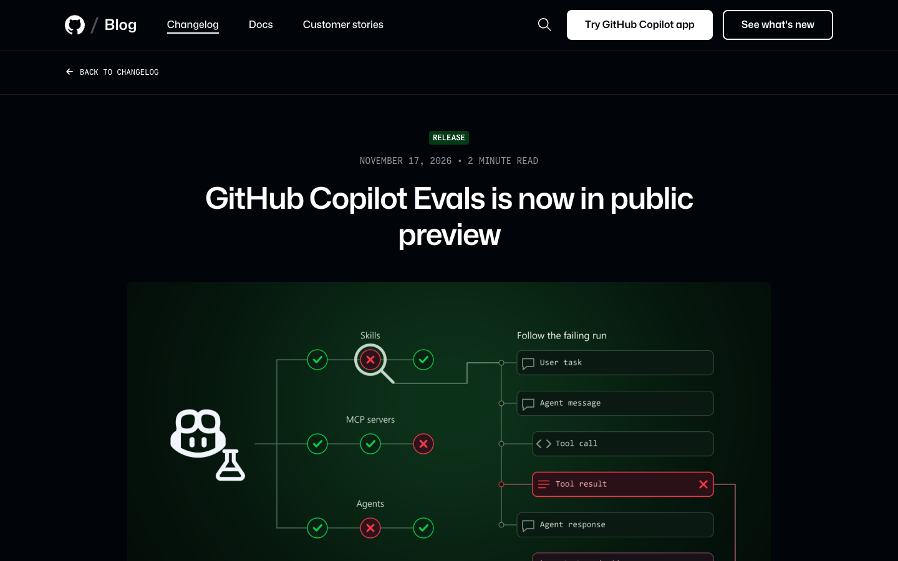
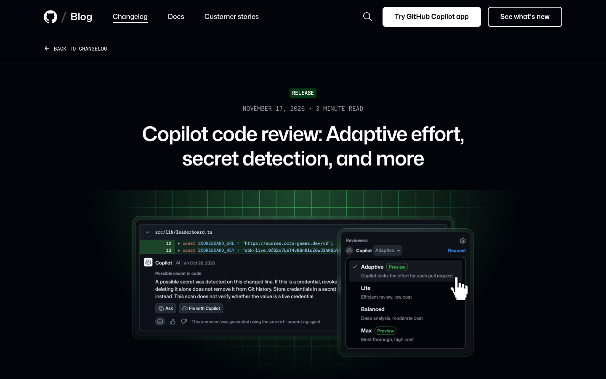
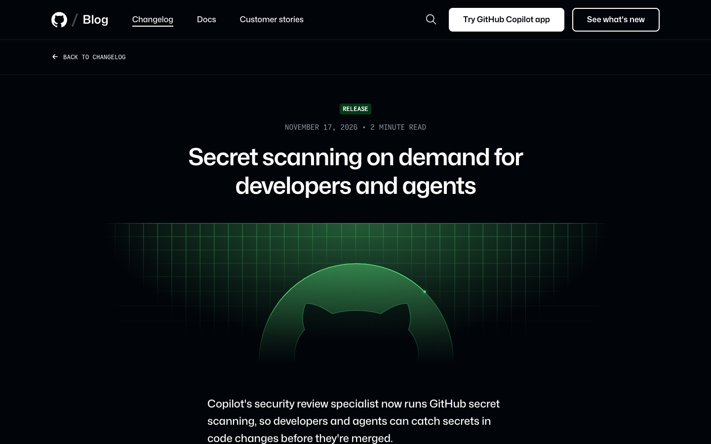
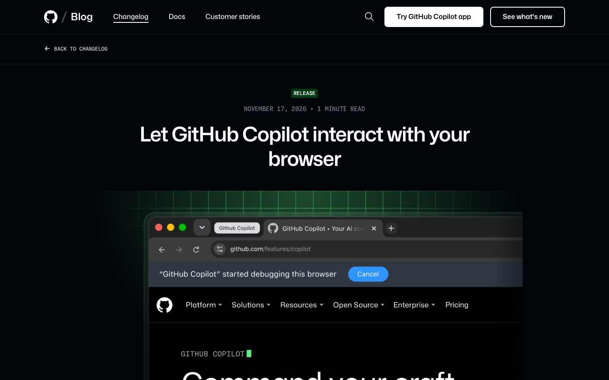
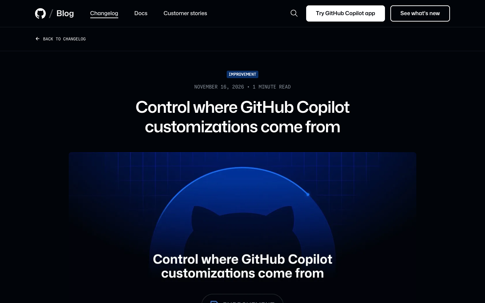
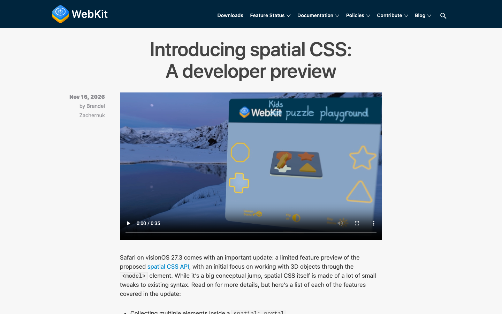
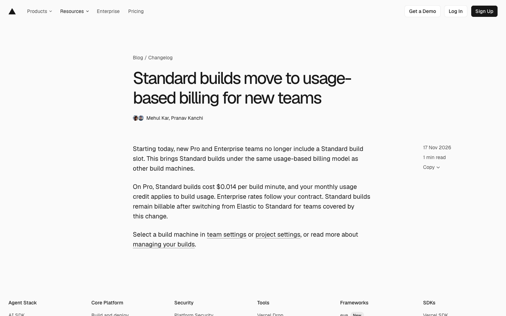
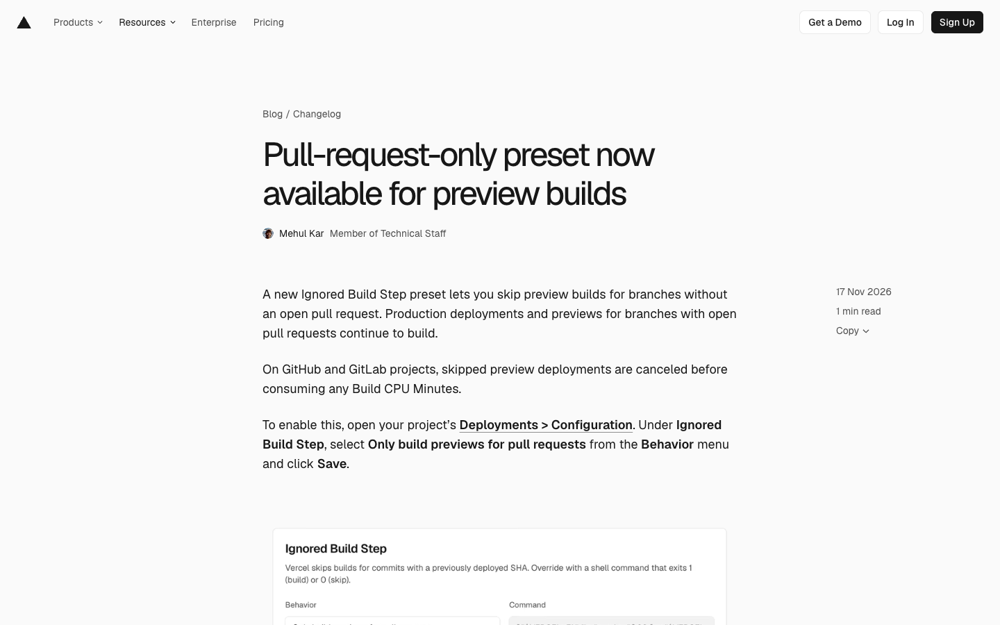
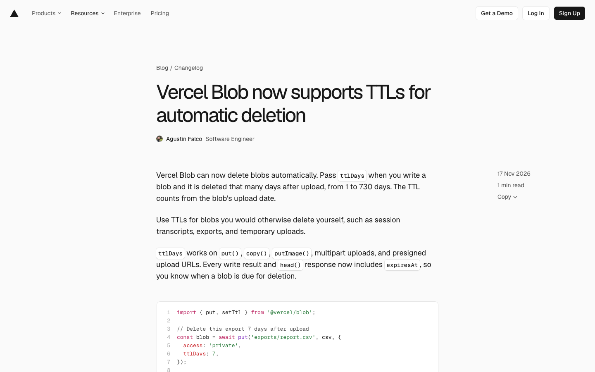

今天最有用的变化，不是又多了一个会生成页面的模型，而是生成之后终于有人开始补“验收层”。GitHub 把 agent eval、分级 code review、secret scan 和浏览器操作接进同一条工作流；WebKit 让空间界面从专用引擎往声明式 CSS 靠；Vercel 则把预览触发、构建分钟和临时资产寿命直接写进配置与账单。设计团队下一轮效率差距，不在 prompt 写得多花，而在能不能把评估标准、权限边界和运行成本一起交付。今天这批更新基本都还没实测，先看机制，不替官方预览版背书。

GitHub 把 skills、custom agents 和 MCP tools 的评估做进 Copilot：用自然语言或 /eval 建用例，每次运行前人工批准，再对比定制前后的通过率。预览面向 Individual、Business 和 Enterprise，底层是可本地运行的 Vally eval engine。
这比“让同事多试几个 prompt”靠谱得多。真正该抄的是先写失败条件，再做 agent；否则一堆漂亮 demo 只是没有回归测试的动态原型。

Copilot code review 现在会按 PR 的复杂度与风险在 Lite、Balanced、Max 之间分档，而且不会越过组织设定的上限；跨仓上下文还可以读取相关公共仓库、文档、custom instructions 和 skills。适用 Pro、Pro+、Max、Business 与 Enterprise 方案。
对设计工程更实在的价值，是让 token 预算跟风险走：样式微调别开 Max，支付、权限和数据迁移别只跑 Lite。分级审查终于不像“一把尺子量所有 diff”。

Copilot 的 security review specialist 可直接调用 GitHub secret scanning，覆盖 500 多种 provider pattern 与 150 多家合作方；它检查当前变更，不扫完整仓库历史。功能默认关闭，不额外要求方案，但会按 Secret Protection AI Credit SKU 消耗 AI credits。
把密钥检查放到 agent 交付前，比泄漏后补 .gitignore 有用。边界也要写清：这是 diff 级护栏，不是历史仓库清洗，更不是免费的全量安全审计。

GitHub 把 Chrome extension 和 Copilot CLI、app、VS Code、JetBrains 配对，公开预览里可以调试网页、跑交互测试和执行多步浏览器任务；权限仍可在设置里管理。
这类能力最容易被误写成“自动验收”。实际交付标准应该是可重复的脚本、截图和断言，不是看见 agent 点成功一次。还没实测，先不下稳定性结论。

Enterprise 管理员可以强制团队只从指定 plugin 或 managed settings 获取 skills、custom agents、hooks、MCP servers 与可执行扩展；strictPluginOnlyCustomization 会阻断用户和项目里的独立来源，还能和 strictKnownMarketplaces 配合。
团队开始共享 agent 之后，治理问题会比 prompt 问题更早爆出来。设计系统脚本、发布钩子和原型 MCP 都属于可执行供应链，不该靠“这个 repo 看起来熟”来放行。

WebKit 在 visionOS 27.3 的 feature flag 下放出 Spatial CSS：spatial: portal、真正的 3D transform、position-anchor、@environment-map、portal-action: orbit，以及 requestVolumetricScene()。<model> 则已覆盖 Safari 27 的各个平台。
最关键的不是网页突然能做 3D，而是空间状态开始继承 CSS 的声明式能力：媒体查询、reduced motion、色彩主题都能进同一套规则。现在仍是 visionOS 开发预览，别急着改生产技术栈；先把空间层级、降级路径和无障碍状态写成设计规范。

新建的 Pro 与 Enterprise 团队不再自带 Standard build slot。Pro 在从 Elastic 切到 Standard 后按每分钟 0.014 美元计费，月度 usage credit 可抵扣；Enterprise 走合同价格。
这会把“预览部署随便跑”变成真实预算。动效网站、WebGL demo 和多语言营销页往往构建最慢，设计工程排期里该开始记录 build minute，而不是只看开发工时。

Vercel 的 Ignored Build Step 新增 Pull Request Only preset：没有开放 PR 的分支预览会在消耗 Build CPU Minutes 前被跳过，GitHub 与 GitLab 均可用；生产部署和有 PR 的预览不受影响。
成本控制和协作规则在这里对上了。探索分支可以继续乱跑，准备评审时再付构建费；代价是“直接发分支链接给设计师看”这条旧习惯会失效，团队要把 PR 变成正式预览入口。

Vercel Blob 的 put、copy、putImage、multipart 和 presigned upload 都能设置 ttlDays，范围 1–730 天；也能通过 expiresAt 查看、批量设置、修改或清除，单次最多 1000 个 blob。TTL 每开始 60 天计 1 次 Advanced Operation，7 天是 1 次，730 天是 13 次，清除 TTL 与删除本身不收费。
原型上传图、AI 中间帧、评审录屏终于可以把“多久后消失”写进代码。别把 TTL 当免费清洁工，寿命越长操作费越高；临时资产默认 7–30 天更像正常值。
Vimeo 原片https://vimeo.com/1247356781
这支 98 秒短片从一座蓝紫色微缩“蜂巢城市”起步，把蜜蜂身体、蜂群轨迹、洞孔网格和抽象容器拆成连续变体。中段最聪明的一笔，是让群体运动变成橙色波形：方向、密度和节奏同时可见；后半段故意让材料与空间失控，再回到城市舞台，完成一次“偏航—发现—归队”的小叙事。
它没有靠花哨转场硬推节奏，主要用形状押韵和运动方向接力。橙黄蜂体、蓝紫城市、黑白网格三套母题反复交叉，所以高密度镜头仍然记得住。前端实现可以照这个顺序做：先定三种视觉状态，再让材质、粒子与构图围绕状态换皮；下一支 WebGL hero 先画状态转移表，别一上来堆 shader。
今天已覆盖 Copilot Evals、Adaptive code review、按需 secret scanning、browser use、customization source controls、Spatial CSS、Vercel Standard build billing、PR-only previews、Blob TTL；完整视频为《Quorum》。Stash 观察已覆盖 Postoffice《Give the Gift of Closeness》、《Quorum》、《Something in the Air》。
继续避免重复：11 月 16 日的 BYOK、Token Pass、Penpot token library、缓存、npm 凭证、《Gatto》；以及 Manta、Clash、ETC、We Love Pitching、Trizz、Swatch 与 Stash 180。